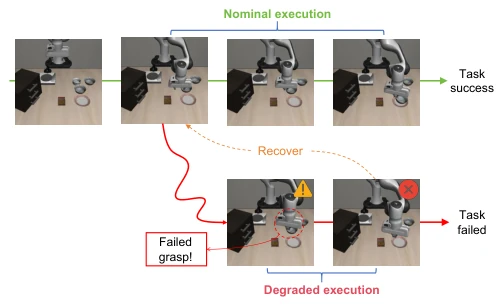
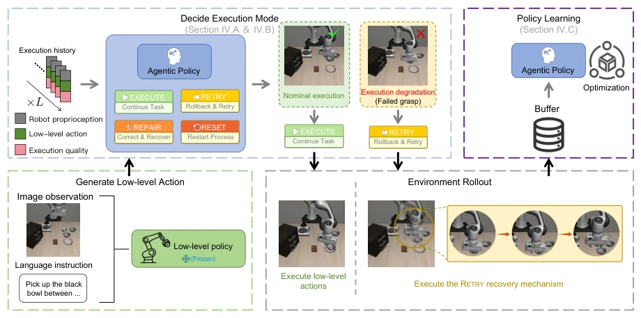
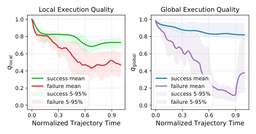
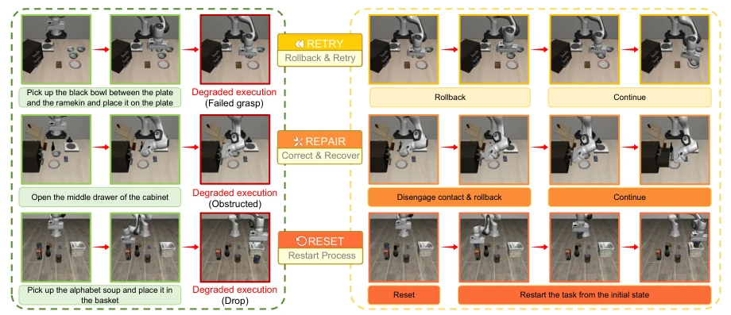
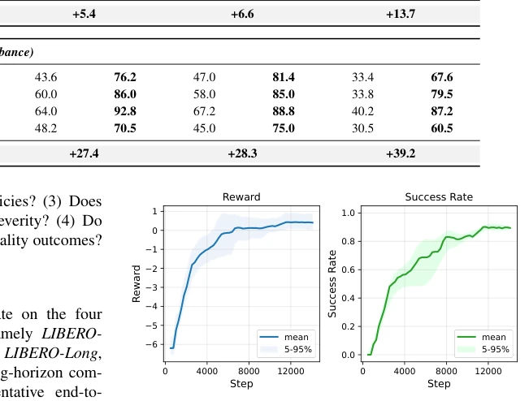
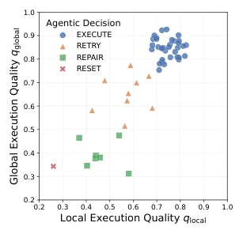
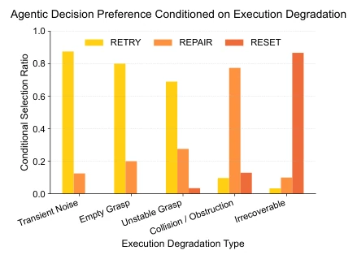

This paper adds a "supervisor" to VLA models, which is quite interesting. Although current VLA models can perform tasks, once they slip or the environment encounters some interference, they tend to fail and cannot recover on their own. The authors did not retrain the large model, but instead implemented a high-level RL strategy to manage the execution process. The core involves calculating two quality scores, then deciding whether to continue, retry, repair, or restart. Experiments on the LIBERO benchmark showed good results, especially with added interference where the improvement was significant. However, if truly encountering extreme situations that are completely hopeless, this "supervisor" might not be able to save it, after all it only looks at proprioception not visual details. Overall, it is a pragmatic small patch, much lighter than those that add a large VLM inference module frequently, but still far from a true "agent", after all it is just an execution manager, not a decision brain.
The core difficulty of embodied manipulation lies in error accumulation during long-horizon execution. Even if VLA models have strong generalization capabilities, once execution deviates from expectations (such as grasping misalignment), small errors accumulate into major failures [1]. Existing methods either rely on accumulating data for retraining, which is costly and hard to cover long-tail cases; or introduce VLM for replanning, resulting in complex systems and high latency [9], [10]. More critically, many methods lack explicit execution quality assessment mechanisms, leading to the system being unable to perceive "deterioration". This paper aims to address such execution-level failures, improving robustness through a lightweight decision mechanism, rather than modifying the underlying policy or introducing heavy reasoning modules.

Fig. 1. Under nominal conditions, manipulation policies can successfully complete tasks through stable execution. However, small execution errors may accumulate over time, causing execution to drift into degraded states. Once execution becomes unstable, task progress stalls and failures occur, motivating explicit mechanisms for execution-level monitoring and recovery.
The overall framework is hierarchical control: the low-level is frozen VLA or Diffusion Policy generating actions, the high-level is Agentic Policy making decisions. Decision inputs are execution history (proprioception, actions, quality scores), outputs are four modes. The innovation lies in two quality assessment metrics: Local looks at short-term stability (end-effector displacement/action ratio, smoothness), Global looks at long-term trajectory deviation (comparing against a feature library of successful reference trajectories). The recovery mechanism is divided into three levels: RETRY rolls back to a recent high-quality state, REPAIR rolls back to a non-contact state, RESET completely restarts. Agentic Policy is trained using PPO, the reward function includes task success, failure penalty, and recovery cost. This design decouples execution management from action generation, enhancing robustness without retraining the underlying policy. Additionally, the system utilizes a sliding window to aggregate historical states, ensuring decisions are based on recent dynamics rather than instantaneous noise. The recovery mechanism implements rollback through an Operational Space Controller (OSC), ensuring the robot returns to a known safe state, avoiding continuing execution on an erroneous state which leads to irreversible failure.

Fig. 2. Agentic reinforcement learning framework. A frozen low-level policy generates low-level actions, while a high-level agentic policy observes execution history and selects execution modes (EXECUTE, RETRY, REPAIR, RESET) to regulate the execution process. Rollout data are stored for policy learning, enabling recovery from execution degradation without modifying the low-level policy.

Fig. 3. Local and global execution quality over normalized trajectory time for successful and failed executions. Successful trajectories maintain higher and more stable execution quality, while failed trajectories exhibit faster degradation. Shaded regions indicate the 5th–95th percentile ranges.

Fig. 4. Illustration of the three recovery mechanisms under different execution degradation cases. RETRY restores the robot to a recent high-quality state and resumes execution. REPAIR restores the robot to a contact-free high-quality state within a longer horizon before continuing execution. RESET terminates the current episode and restarts the task from the initial configuration.
实验Experiments
在 LIBERO 基准测试，涵盖 Spatial, Object, Goal, Long 四个子集。对比基线包括 OpenVLA, π0, π0.5, Diffusion Policy。主要指标是任务成功率。标准设置下平均提升 5-13%，扰动设置下提升更明显，最高达 39.2%（OpenVLA 在 Long 任务上）。消融分析显示策略能根据退化类型选择不同恢复模式（轻微用 RETRY，严重用 RESET）。开销方面，恢复频率随底层策略脆弱性增加，但总体执行成本可控。证明了该方法能有效将不可逆失败转化为成功。
Evaluated on the LIBERO benchmark, covering four subsets: Spatial, Object, Goal, and Long. Comparison baselines include OpenVLA, π0, π0.5, and Diffusion Policy. The main metric is task success rate. Under standard settings, the average improvement is 5-13%, while under perturbed settings the improvement is more obvious, reaching up to 39.2% (OpenVLA on Long tasks). Ablation analysis shows the strategy can select different recovery modes based on degradation types (slight degradation uses RETRY, severe uses RESET). Regarding overhead, recovery frequency increases with the fragility of the underlying policy, but the overall execution cost remains controllable. This proves the method can effectively convert irreversible failures into success.

Fig. 5. PPO training curves of the agentic policy on LIBERO-Spatial with a frozen OpenVLA policy. Mean reward (left) and success rate (right) are shown with 95% CIs over 3 seeds.

Fig. 7. Agentic decisions plotted in the local–global execution quality space, showing how different execution modes are selected under varying execution conditions.

Fig. 6. Conditional distribution of agentic decision across execution degradation types. Statistics are computed over trajectory segments where the agentic policy deviates from nominal execution. The agentic policy prefers RETRY for mild degradations, REPAIR for collision-induced failures, and RESET for irrecoverable states.